Moment-of-symmetry scales, and finding them in a biosignal#
A moment of symmetry (MOS), equivalently a well-formed scale, is built by stacking a single generating interval and reducing by a period. It has exactly two step sizes, large and small, distributed as evenly as two sizes can be. Almost every scale anyone actually plays is one — the pentatonic, the diatonic, the chromatic — plus a large microtonal hinterland ordinary keyboards cannot reach.
This notebook works through biotuner.mos, which implements
Milne, A.J., Carlé, M., Sethares, W.A., Noll, T., Holland, S. (2011). Scratching the Scale Labyrinth. In Mathematics and Computation in Music, LNAI 6726, 180–195.
— the combinatorics, the labyrinth visualisation, the modal algebra, the Fourier Scratching performance technique and the Dynamic Tonality timbre matching — and then goes past the paper to the question it does not ask: given a biosignal’s spectral peaks, which well-formed scale best explains them?
# Render figures inline whatever backend the environment picked. A docs
# build with MPLBACKEND=Agg makes plt.show() a no-op, which drops every
# figure out of this notebook and leaves the prose describing nothing.
%matplotlib inline
import math
import matplotlib.pyplot as plt
import numpy as np
import pandas as pd
import biotuner.mos as M
FIFTH = 3 / 2
plt.rcParams["figure.dpi"] = 100
C:\Users\skite\Documents\Github\biotuner\.claude\worktrees\epic-morse-ded0d5\biotuner\biotuner_object.py:11: DeprecationWarning:
The `fooof` package is being deprecated and replaced by the `specparam` (spectral parameterization) package.
This version of `fooof` (1.1) is fully functional, but will not be further updated.
New projects are recommended to update to using `specparam` (see Changelog for details).
from fooof import FOOOF
1. The labyrinth#
The whole universe of well-formed scales, drawn at once. Reading it (Milne et al. §4):
angle is the generator as a fraction of the period. Zero is at the top, ½ at the bottom, so a 700-cent generator against a 1200-cent period sits at 7/12 of the way round.
ring is cardinality. Ring N carries every N-note MOS.
spokes are equal temperaments. Each runs inward from the rim and touches without crossing the ring giving its note count.
arcs are valid tuning ranges — the generators over which a scale keeps its identity. The thick inner band is where it is also coherent (proper).
The picture is left–right symmetric because a generator and its complement within the period build the same scale.
fig, ax = M.plot_labyrinth(18)
plt.show()
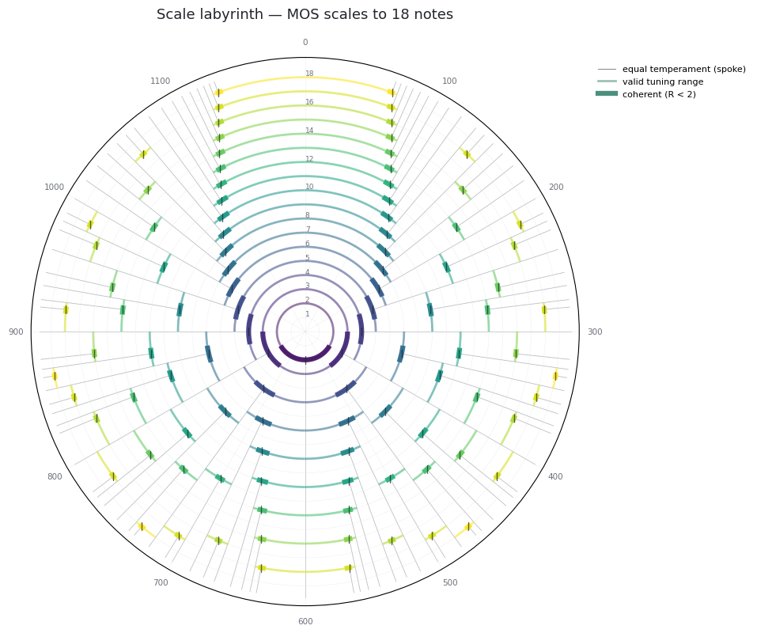
Zooming in on the diatonic#
Milne et al. Fig. 6 zooms on the 700-cent region to read off one scale’s structure. On ring 7, the arc runs from 600 ¢ (=1/2) to 720 ¢ (=3/5), and the 7-EDO spoke at 685.7 ¢ (=4/7) meets it without crossing — that is where the diatonic meets its inverse, the anti-diatonic.
fig, ax = M.plot_labyrinth(9, annotate=9, generator_range=(0.47, 0.63))
plt.show()
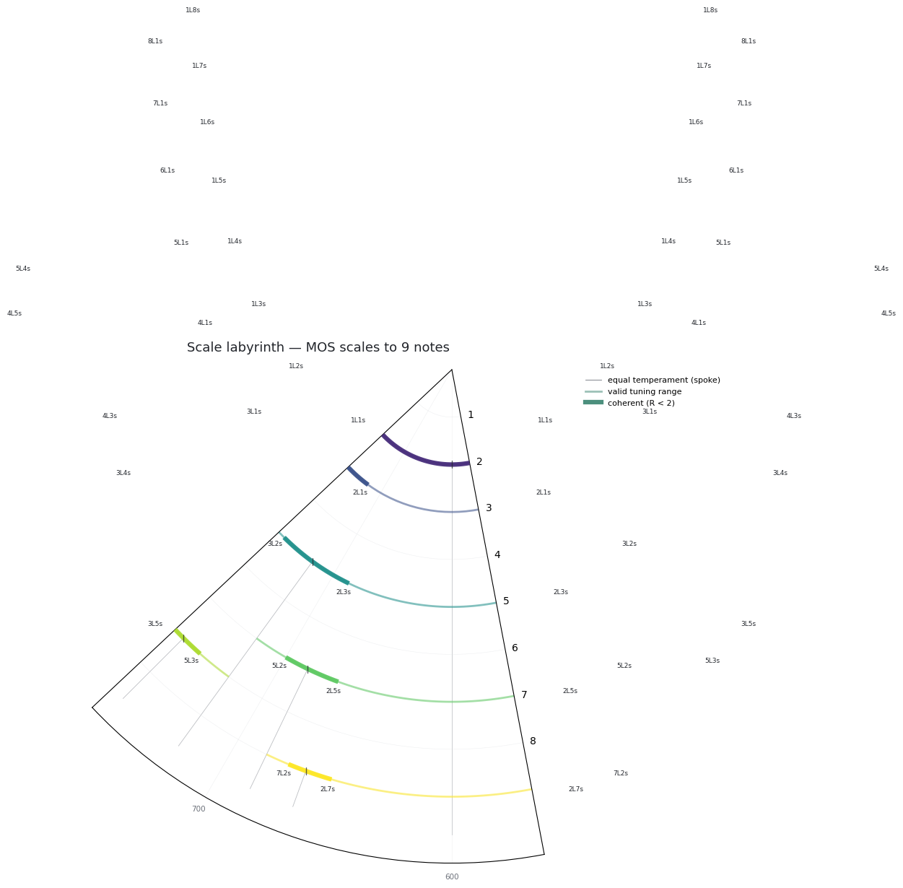
2. The tree underneath#
The labyrinth is a Stern–Brocot tree bent into a circle. Every node is the mediant of the pair bracketing it, and its denominator is the cardinality of the MOS whose two step sizes equalise there. Tracing a generator’s path down the tree enumerates its entire scale family — exactly, with no search.
fig, ax = M.plot_stern_brocot(12, highlight_generator=math.log2(FIFTH))
plt.show()
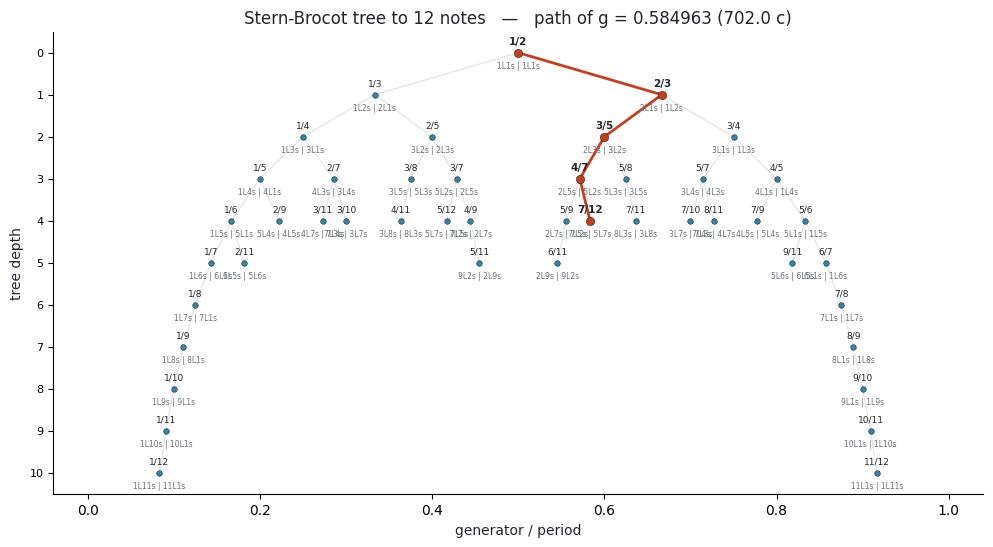
g = M.generator_fraction(FIFTH)
print("path down the tree:", M.sb_path(g, 53))
print("MOS cardinalities: ", M.mos_cardinalities(g, 53, include_trivial=True))
path down the tree: RLLRRLLL
MOS cardinalities: [2, 3, 5, 7, 12, 17, 29, 41, 53]
Those cardinalities — 2, 3, 5, 7, 12, 17, 29, 41, 53 — are the semiconvergent
denominators of log2(3/2), and they are exactly the numbers of notes at which a stack
of fifths has only two step sizes. They are also the historically important divisions of
the octave, which is not a coincidence.
3. A generator’s family#
Each scale in a family is a subset of the next one down: they are all the same generator chain, cut at different lengths.
family = M.mos_family(FIFTH, max_cardinality=29)
pd.DataFrame([
{
"notes": s.cardinality,
"signature": s.signature,
"word": s.word,
"L ¢": round(s.step_cents[0], 2),
"s ¢": round(s.step_cents[1], 2),
"R": round(s.hardness, 3),
"proper": s.is_proper,
}
for s in family
])
| notes | signature | word | L ¢ | s ¢ | R | proper | |
|---|---|---|---|---|---|---|---|
| 0 | 3 | 2L1s | sLL | 498.04 | 203.91 | 2.442 | False |
| 1 | 5 | 2L3s | ssLsL | 294.13 | 203.91 | 1.442 | True |
| 2 | 7 | 5L2s | LLLsLLs | 203.91 | 90.22 | 2.260 | False |
| 3 | 12 | 5L7s | LsLsLssLsLss | 113.69 | 90.22 | 1.260 | True |
| 4 | 17 | 12L5s | sLLsLLsLLLsLLsLLL | 90.22 | 23.46 | 3.846 | False |
| 5 | 29 | 12L17s | ssLsLssLsLssLsLsLssLsLssLsLsL | 66.76 | 23.46 | 2.846 | False |
fig, ax = M.plot_mos_family(FIFTH, max_cardinality=17)
plt.show()
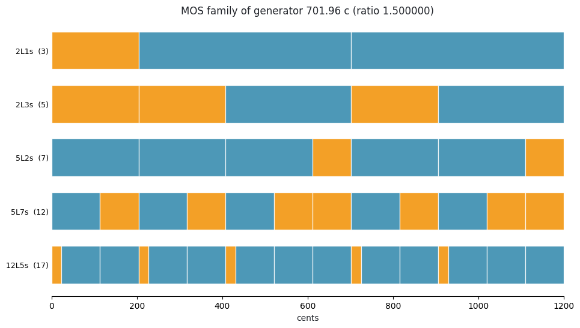
4. One scale, up close#
MOSScale keeps the abstract structure (5L2s) and the concrete tuning (a 702-cent
generator) as separate coordinates — the two-part choice the labyrinth affords.
d = M.mos(FIFTH, 7)
print(d.summary())
5L2s (7 notes) LLLsLLs
generator 701.955 c (ratio 1.500000, g = 0.584963)
period 1200.000 c (ratio 2.000000)
steps L = 203.910 c, s = 90.225 c, R = 2.2600
valid range 4/7 .. 3/5 (685.7 .. 720.0 c)
coherent over 4/7 .. 7/12 -> IMPROPER at this tuning
landmarks equalized 4/7 = 7-EDO, s->0 at 3/5 = 5-EDO, L->0 at 1/2 = 2-EDO
inverse 2L5s
embedded in 12 notes (equal at 7/12)
Note the last two lines of that summary. Pythagorean tuning is improper: its generator, 702 ¢, is outside the diatonic’s coherent range of 4/7 … 7/12 (685.7 … 700 ¢). Concretely, the Pythagorean major third is wider than the diminished fourth, so generic and specific interval sizes stop agreeing. Flatten the fifth into meantone and coherence returns.
pd.DataFrame([
{
"tuning": name,
"generator ¢": round(s.generator_cents, 3),
"L ¢": round(s.step_cents[0], 2),
"s ¢": round(s.step_cents[1], 2),
"R = L/s": round(s.hardness, 3),
"proper": s.is_proper,
}
for name, s in [
("7-EDO (equalized)", M.MOSScale.from_signature(5, 2, tuning="equalized")),
("19-EDO", M.MOSScale.from_signature(5, 2, tuning=19)),
("31-EDO (meantone)", M.MOSScale.from_signature(5, 2, tuning=31)),
("12-EDO", M.MOSScale.from_signature(5, 2, tuning=12)),
("Pythagorean", M.mos(FIFTH, 7)),
("5-EDO (s vanishes)", M.MOSScale.from_signature(5, 2, tuning="middle").retune(0.5999)),
]
])
| tuning | generator ¢ | L ¢ | s ¢ | R = L/s | proper | |
|---|---|---|---|---|---|---|
| 0 | 7-EDO (equalized) | 685.714 | 171.43 | 171.43 | 1.000 | True |
| 1 | 19-EDO | 694.737 | 189.47 | 126.32 | 1.500 | True |
| 2 | 31-EDO (meantone) | 696.774 | 193.55 | 116.13 | 1.667 | True |
| 3 | 12-EDO | 700.000 | 200.00 | 100.00 | 2.000 | True |
| 4 | Pythagorean | 701.955 | 203.91 | 90.22 | 2.260 | False |
| 5 | 5-EDO (s vanishes) | 719.880 | 239.76 | 0.60 | 399.600 | False |
fig, ax = M.plot_scale_wheel(M.MOSScale.from_signature(5, 2, tuning=31))
plt.show()
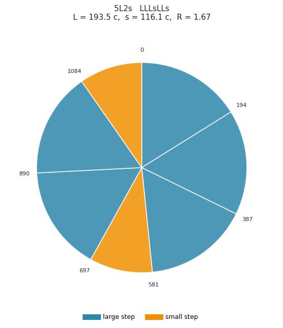
The keyboard is drawn with key widths proportional to the step above each tone (Milne et al. Fig. 8), so the maximally even distribution of large and small steps is visible directly.
5. Landmarks: how the two steps trade off#
As the generator moves, the two step sizes co-vary, always summing to the period, and they pass through three distinguished tunings (Milne et al. §2, “Landmark equal tunings”). One where they become equal — where the scale meets its inverse — and one on each side where a step size shrinks to zero.
fig, axes = M.plot_step_covariation(5, 2, mark=M.MOSScale.from_signature(5, 2, tuning=31).generator)
plt.show()
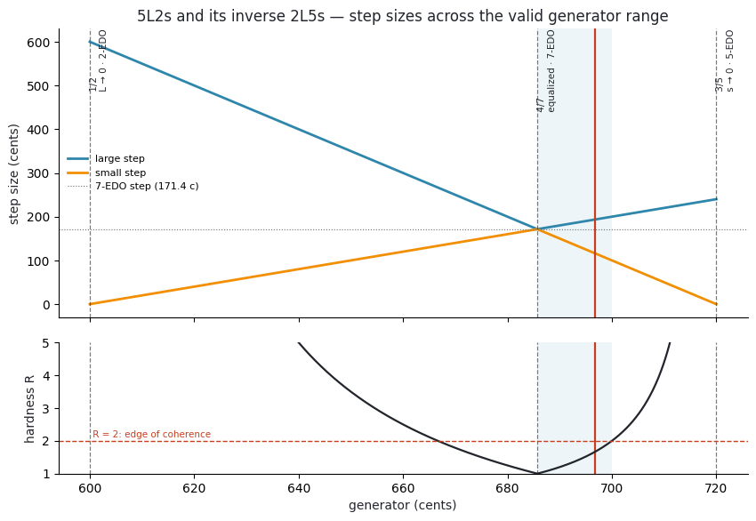
lm = M.mos_landmarks(5, 2)
print(f"equalized {lm.equalized} = {lm.equalized_edo}-EDO")
print(f"small vanishes {lm.small_vanishes} = {lm.small_vanishes_edo}-EDO")
print(f"large vanishes {lm.large_vanishes} = {lm.large_vanishes_edo}-EDO")
print(f"embedded in {M.embedding(5, 2)[0]} notes at {M.embedding(5, 2)[1]}")
print(f"coherent over {M.coherence_range(5, 2)[0]} … {M.coherence_range(5, 2)[1]}")
equalized 4/7 = 7-EDO
small vanishes 3/5 = 5-EDO
large vanishes 1/2 = 2-EDO
embedded in 12 notes at 7/12
coherent over 4/7 … 7/12
6. Modes, and why exactly one note moves#
A scale presupposes periodicity, so all its rotations are the same scale. A mode is a
choice of finalis. The modes of a well-formed scale are parsimonious: neighbouring
modes in the brightness order differ by a single tone, displaced by the chroma L − s.
d12 = M.MOSScale.from_signature(5, 2, tuning=12)
fig, ax = M.plot_modes(d12)
plt.show()
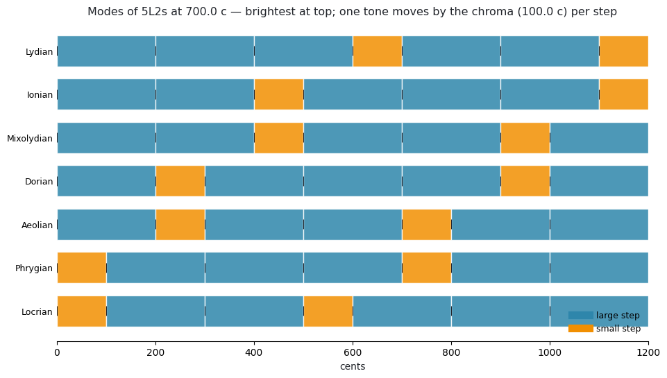
for brighter, darker, moved in M.parsimony_chain(d12):
step, mine, theirs = moved[0]
print(f"{brighter.name:11s} -> {darker.name:11s} degree {step} : "
f"{mine:7.1f} ¢ -> {theirs:7.1f} ¢ ({mine - theirs:+.1f} ¢)")
Lydian -> Ionian degree 3 : 600.0 ¢ -> 500.0 ¢ (+100.0 ¢)
Ionian -> Mixolydian degree 6 : 1100.0 ¢ -> 1000.0 ¢ (+100.0 ¢)
Mixolydian -> Dorian degree 2 : 400.0 ¢ -> 300.0 ¢ (+100.0 ¢)
Dorian -> Aeolian degree 5 : 900.0 ¢ -> 800.0 ¢ (+100.0 ¢)
Aeolian -> Phrygian degree 1 : 200.0 ¢ -> 100.0 ¢ (+100.0 ¢)
Phrygian -> Locrian degree 4 : 700.0 ¢ -> 600.0 ¢ (+100.0 ¢)
Milne et al. §4 formalise this as a free commutative group ℤ² of rank 2, generated by two commuting transformations: σ (diatonic transposition — same notes, finalis one step higher) and τ (chromatic transposition — same finalis, origin one generator sharpwards). Each mode occupies a fundamental frame in that lattice.
fig, axes = M.plot_mode_lattice(d12, width=4, height=3)
plt.show()
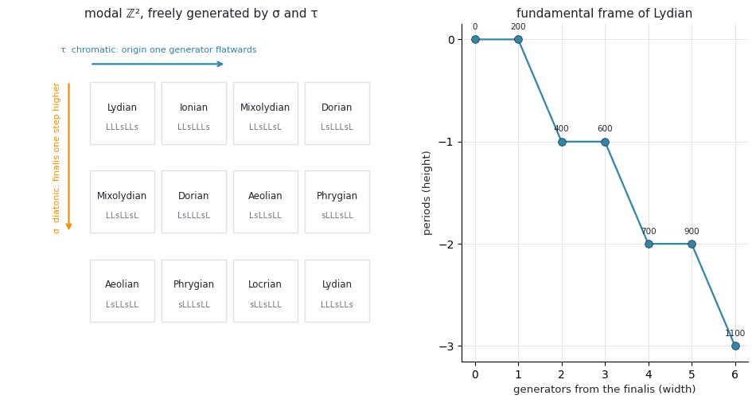
7. Named temperaments#
Milne et al. §4 overlay named rank-2 temperaments on the labyrinth as radial lines at their optimal generators. Here those generators are computed from each temperament’s comma — find the saturated integer mapping that annihilates the comma, reduce it to Hermite normal form, then solve a Tenney-weighted least squares — so the numbers are derived rather than copied, and can be checked against published tables.
temps = M.all_temperaments()
pd.DataFrame([
{
"name": name,
"comma": str(t.comma),
"periods/oct": t.periods_per_octave,
"period ¢": round(t.period_cents, 2),
"POTE gen ¢": round(t.pote_generator_cents, 3),
"max prime error ¢": round(t.max_error, 3),
}
for name, t in temps.items()
]).sort_values("max prime error ¢").reset_index(drop=True)
| name | comma | periods/oct | period ¢ | POTE gen ¢ | max prime error ¢ | |
|---|---|---|---|---|---|---|
| 0 | schismatic | 32805/32768 | 1 | 1200.0 | 701.736 | 0.236 |
| 1 | amity | 1600000/1594323 | 1 | 1200.0 | 339.519 | 0.359 |
| 2 | hanson | 15625/15552 | 1 | 1200.0 | 317.007 | 1.021 |
| 3 | sensipent | 78732/78125 | 1 | 1200.0 | 756.942 | 1.081 |
| 4 | wuerschmidt | 393216/390625 | 1 | 1200.0 | 812.201 | 1.420 |
| 5 | compton | 531441/524288 | 12 | 100.0 | 84.882 | 1.955 |
| 6 | tetracot | 20000/19683 | 1 | 1200.0 | 176.160 | 2.158 |
| 7 | srutal | 2048/2025 | 2 | 600.0 | 104.898 | 3.414 |
| 8 | meantone | 81/80 | 1 | 1200.0 | 696.239 | 4.741 |
| 9 | magic | 3125/3072 | 1 | 1200.0 | 380.058 | 5.814 |
| 10 | porcupine | 250/243 | 1 | 1200.0 | 163.950 | 7.143 |
| 11 | ripple | 6561/6250 | 1 | 1200.0 | 100.838 | 7.668 |
| 12 | negri | 16875/16384 | 1 | 1200.0 | 125.755 | 10.126 |
| 13 | diminished | 648/625 | 4 | 300.0 | 99.507 | 10.670 |
| 14 | augmented | 128/125 | 3 | 400.0 | 306.638 | 13.686 |
| 15 | blackwood | 256/243 | 5 | 240.0 | 159.594 | 18.045 |
| 16 | mavila | 135/128 | 1 | 1200.0 | 679.806 | 24.810 |
| 17 | dicot | 25/24 | 1 | 1200.0 | 348.594 | 31.649 |
| 18 | bug | 27/25 | 1 | 1200.0 | 939.612 | 32.523 |
| 19 | father | 16/15 | 1 | 1200.0 | 743.986 | 76.218 |
fig, ax = M.plot_labyrinth(18, temperaments=True)
plt.show()
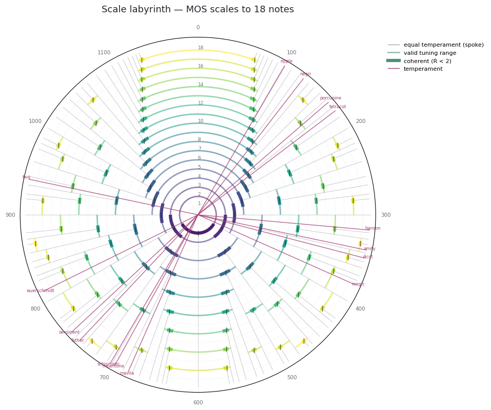
8. Where the labyrinth approximates just intonation#
Milne et al. §1 point at this use directly. Each cell is the mean cents error from a 5-limit just interval to the nearest degree of the MOS at that (generator, cardinality); grey means there is no MOS there at all, which is most of the plane.
fig, ax = M.plot_ji_landscape(max_cardinality=24, resolution=1600)
plt.show()
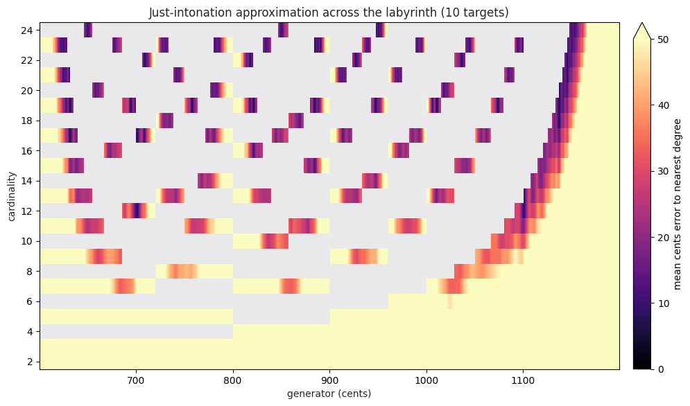
9. From a biosignal to a scale#
Everything above is music theory. This is the part the paper does not have.
The labyrinth is a search space with three coordinates — generator, cardinality and
period — and fit_mos searches it. Candidate generators come from the signal itself
(every observed ratio, and every ratio between ratios), plus a background grid. Only the
cardinalities that are genuinely MOS for a given generator are considered. The objective
is amplitude-weighted mean cents error from each peak ratio to its nearest scale degree,
plus a penalty for surplus notes — without which the biggest scale allowed would always
win by brute coverage.
There is a fourth, nuisance coordinate too: each candidate scale is free to transpose itself onto the data. A scale and its transpositions are the same scale, so this is the right comparison — and it matters. A stack of fifths is the pentatonic, but only in one of the pentatonic’s five modes; pin every candidate to a 1/1 root and the answer is missed.
Start with a signal whose peaks really are a stack of fifths, buried in noise.
rng = np.random.default_rng(7)
sf = 1000.0
t = np.arange(0, 30, 1 / sf)
base = 5.0
partials = [base, base * 1.5, base * 2.25, base * 3.375, base * 2.0]
amps = [1.0, 0.9, 0.75, 0.5, 0.65]
signal = sum(a * np.sin(2 * np.pi * f * t) for a, f in zip(amps, partials))
signal = signal + 0.25 * rng.standard_normal(t.size)
from biotuner.biotuner_object import compute_biotuner
bt = compute_biotuner(sf, peaks_function="FOOOF", precision=0.1)
bt.peaks_extraction(signal, min_freq=2, max_freq=40, n_peaks=5)
print("peaks (Hz):", np.round(bt.peaks, 3))
print("ratios: ", np.round(bt.peaks_ratios, 5))
peaks (Hz): [ 5. 7.5 9.99 11.25 16.88]
ratios: [1.125 1.12533 1.12613 1.332 1.5 1.50044 1.688 1.68969 1.998 ]
fit = bt.fit_mos(max_cardinality=16)
print(M.explain_fit(fit, bt.peaks_ratios))
2L3s (5 notes) ssLsL
generator 702.727 c (ratio 1.500669, g = 0.585606)
period 1200.000 c (ratio 2.000000)
steps L = 291.820 c, s = 205.453 c, R = 1.4204
valid range 1/2 .. 3/5 (600.0 .. 720.0 c)
coherent over 4/7 .. 3/5 -> proper
landmarks equalized 3/5 = 5-EDO, s->0 at 1/2 = 2-EDO, L->0 at 2/3 = 3-EDO
inverse 3L2s
embedded in 7 notes (equal at 4/7)
fit error 0.577 c (weighted mean), max 1.149 c, rms 0.681 c
chance 60.000 c for 5 degrees; improvement 103.92x; evidence 4.54 SE below chance
coverage 100.0% of weight within tolerance; 7 targets, 0 unused degrees; score 0.577
folded 2 ratio(s) merged into a pitch class already present (an octave is not a second target)
targets each ratio and where it landed
1.125000 -> degree 4 ( 908.18 c, -0.58 c)
1.126126 -> degree 4 ( 908.18 c, +1.15 c)
1.332000 -> degree 0 ( 0.00 c, +0.00 c)
1.500000 -> degree 1 ( 205.45 c, +0.19 c)
1.688000 -> degree 2 ( 410.91 c, -0.84 c)
1.689690 -> degree 2 ( 410.91 c, +0.89 c)
1.998000 -> degree 3 ( 702.73 c, -0.77 c)
improvement is the number worth reading. A scale with many notes will always sit close
to any set of ratios, so the error alone means little; improvement divides it by the
error a random set of ratios would get against a scale of that size. A value near 1 is
no better than chance.
It is not the last word, though: a derivation that yields only two ratios can post
an enormous improvement for no good reason, which section 11 takes apart. With
seven targets against a five-note scale, nothing here is being flattered.
pd.DataFrame([
{
"rank": i + 1,
"signature": f.signature,
"notes": f.scale.cardinality,
"generator ¢": round(f.scale.generator_cents, 2),
"error ¢": round(f.error_cents, 3),
"chance ¢": round(f.chance_error_cents, 2),
"improvement": round(f.improvement, 1) if np.isfinite(f.improvement) else "exact",
"score": round(f.score, 3),
}
for i, f in enumerate(bt.mos_fits)
])
| rank | signature | notes | generator ¢ | error ¢ | chance ¢ | improvement | score | |
|---|---|---|---|---|---|---|---|---|
| 0 | 1 | 2L3s | 5 | 702.73 | 0.577 | 60.00 | 103.9 | 0.577 |
| 1 | 2 | 5L2s | 7 | 702.63 | 0.577 | 42.86 | 74.2 | 0.577 |
| 2 | 3 | 5L4s | 9 | 951.36 | 0.577 | 33.33 | 57.7 | 2.577 |
| 3 | 4 | 7L3s | 10 | 848.66 | 0.577 | 30.00 | 52.0 | 3.577 |
| 4 | 5 | 1L9s | 10 | 1099.72 | 2.373 | 30.00 | 12.6 | 5.373 |
fig, ax = bt.plot_labyrinth(16)
plt.show()
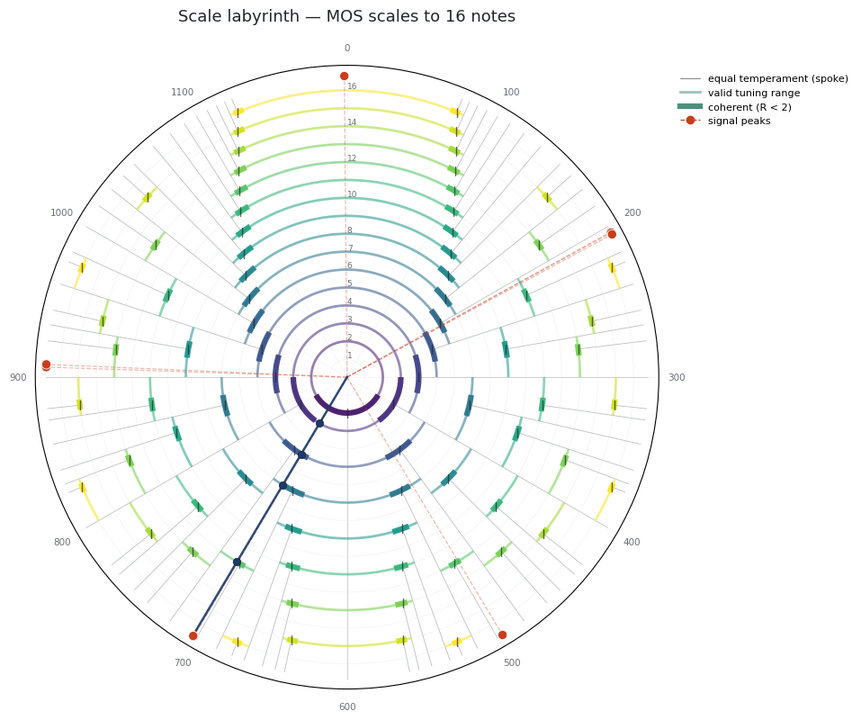
fig, axes = M.plot_mos_fit(fit, bt.peaks_ratios)
plt.show()
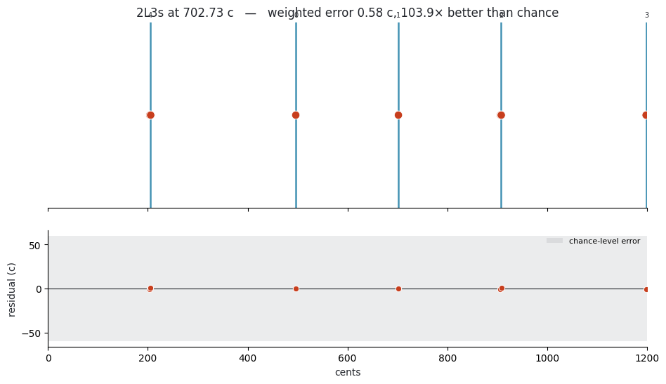
The fitted scale is a tuning like any other, so it flows into the rest of the toolbox:
print("fitted structure :", fit.signature, "at", round(fit.scale.generator_cents, 2), "¢")
print("transposed by :", round(fit.offset * 1200, 2), "¢ -> mode:",
fit.mode.name if fit.mode else "(not a scale tone)")
print("as a tuning :", np.round(bt.get_tuning("mos"), 5))
fitted structure : 2L3s at 702.73 ¢
transposed by : 496.31 ¢ -> mode: mode 3 of 2L3s
as a tuning : [1. 1.126 1.33274 1.50067 1.68976]
print(fit.scale.to_scala(write=False)[:400])
! Scale produced by Biotuner. For tuning yoshimi or zynaddsubfx,
! only include the portion below the final '!'
!
2L3s
5
!
205.45329
410.90658
702.72665
908.17994
1200.00000
10. A path through the labyrinth#
Fit each window of a recording independently and the result is a trajectory: the scale structure drifting, or holding, as the signal evolves. Here is a signal that deliberately changes its harmonic structure halfway through.
half = t.size // 2
seg_a = sum(a * np.sin(2 * np.pi * f * t[:half])
for a, f in zip(amps, partials))
# Second half: a stack of ~316-cent minor thirds instead of fifths.
third = 2 ** (316 / 1200)
partials_b = [base * third**k for k in range(4)] + [base * 2]
seg_b = sum(a * np.sin(2 * np.pi * f * t[half:])
for a, f in zip(amps, partials_b))
switching = np.concatenate([seg_a, seg_b]) + 0.25 * rng.standard_normal(t.size)
traj = M.mos_trajectory(
switching, sf, window_sec=6.0, step_sec=3.0,
peaks_function="FOOOF", precision=0.1, n_peaks=5, max_cardinality=16,
)
pd.DataFrame([
{
"window": i,
"signature": f.signature if f else None,
"generator ¢": round(f.scale.generator_cents, 1) if f else None,
"error ¢": round(f.error_cents, 2) if f else None,
}
for i, f in enumerate(traj)
])
C:\Users\skite\AppData\Local\Programs\Python\Python310\lib\site-packages\scipy\signal\_spectral_py.py:790: UserWarning: nperseg = 10000 is greater than input length = 6000, using nperseg = 6000
freqs, _, Pxy = _spectral_helper(x, y, fs, window, nperseg, noverlap,
C:\Users\skite\AppData\Local\Programs\Python\Python310\lib\site-packages\scipy\signal\_spectral_py.py:790: UserWarning: nperseg = 10000 is greater than input length = 6000, using nperseg = 6000
freqs, _, Pxy = _spectral_helper(x, y, fs, window, nperseg, noverlap,
C:\Users\skite\AppData\Local\Programs\Python\Python310\lib\site-packages\scipy\signal\_spectral_py.py:790: UserWarning: nperseg = 10000 is greater than input length = 6000, using nperseg = 6000
freqs, _, Pxy = _spectral_helper(x, y, fs, window, nperseg, noverlap,
C:\Users\skite\AppData\Local\Programs\Python\Python310\lib\site-packages\scipy\signal\_spectral_py.py:790: UserWarning: nperseg = 10000 is greater than input length = 6000, using nperseg = 6000
freqs, _, Pxy = _spectral_helper(x, y, fs, window, nperseg, noverlap,
C:\Users\skite\AppData\Local\Programs\Python\Python310\lib\site-packages\scipy\signal\_spectral_py.py:790: UserWarning: nperseg = 10000 is greater than input length = 6000, using nperseg = 6000
freqs, _, Pxy = _spectral_helper(x, y, fs, window, nperseg, noverlap,
C:\Users\skite\AppData\Local\Programs\Python\Python310\lib\site-packages\scipy\signal\_spectral_py.py:790: UserWarning: nperseg = 10000 is greater than input length = 6000, using nperseg = 6000
freqs, _, Pxy = _spectral_helper(x, y, fs, window, nperseg, noverlap,
C:\Users\skite\AppData\Local\Programs\Python\Python310\lib\site-packages\scipy\signal\_spectral_py.py:790: UserWarning: nperseg = 10000 is greater than input length = 6000, using nperseg = 6000
freqs, _, Pxy = _spectral_helper(x, y, fs, window, nperseg, noverlap,
C:\Users\skite\AppData\Local\Programs\Python\Python310\lib\site-packages\scipy\signal\_spectral_py.py:790: UserWarning: nperseg = 10000 is greater than input length = 6000, using nperseg = 6000
freqs, _, Pxy = _spectral_helper(x, y, fs, window, nperseg, noverlap,
C:\Users\skite\AppData\Local\Programs\Python\Python310\lib\site-packages\scipy\signal\_spectral_py.py:790: UserWarning: nperseg = 10000 is greater than input length = 6000, using nperseg = 6000
freqs, _, Pxy = _spectral_helper(x, y, fs, window, nperseg, noverlap,
| window | signature | generator ¢ | error ¢ | |
|---|---|---|---|---|
| 0 | 0 | 2L3s | 699.6 | 0.86 |
| 1 | 1 | 2L3s | 702.7 | 2.31 |
| 2 | 2 | 5L2s | 701.8 | 0.84 |
| 3 | 3 | 2L3s | 701.7 | 1.69 |
| 4 | 4 | 8L3s | 759.5 | 6.68 |
| 5 | 5 | 4L3s | 883.4 | 1.38 |
| 6 | 6 | 4L3s | 883.8 | 1.65 |
| 7 | 7 | 4L3s | 883.7 | 2.40 |
| 8 | 8 | 4L3s | 882.8 | 2.31 |
fig, axes = M.plot_mos_trajectory(traj, max_cardinality=16)
plt.show()
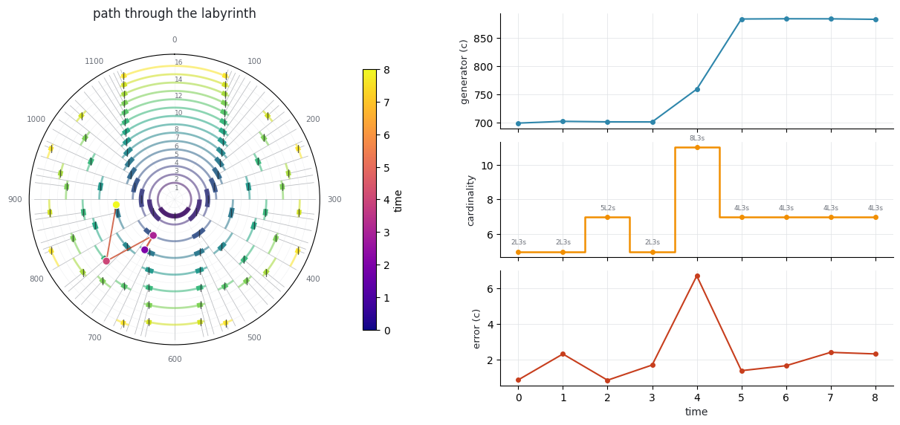
11. Which derivation? Ask all of them#
Section 9 fitted the peak ratios. But compute_biotuner turns a signal into ratios
eight different ways — peak ratios, consonant ratios, extended peaks, dissonance-curve
minima, harmonic-entropy minima, an Euler-Fokker genus, a common-harmonic tuning, a
harmonic fit — and they do not agree with each other. Every one of them can feed the
fit, through source= on bt.fit_mos, bt.mos_trajectory and
M.mos_from_biotuner; bt.compare_mos_sources() runs the whole set at once so they
can be read side by side.
extended_ratios is the one source that needs a precursor — peaks_extension — so
run that first. Everything else is derived on demand.
bt.peaks_extension(method="harmonic_fit", harm_function="mult", cons_limit=0.1)
comparison = bt.compare_mos_sources(max_cardinality=16)
comparison[[
"source", "n_ratios", "n_targets", "n_merged", "signature", "cardinality",
"error_cents", "chance_error_cents", "improvement", "evidence",
"coverage", "underdetermined",
]].round(3)
| source | n_ratios | n_targets | n_merged | signature | cardinality | error_cents | chance_error_cents | improvement | evidence | coverage | underdetermined | |
|---|---|---|---|---|---|---|---|---|---|---|---|---|
| 0 | peaks_ratios | 9.0 | 7.0 | 2.0 | 2L3s | 5.0 | 0.577 | 60.000 | 1.039200e+02 | 4.538 | 1.000 | False |
| 1 | extended_ratios | 18.0 | 17.0 | 1.0 | 12L1s | 13.0 | 9.949 | 23.077 | 2.320000e+00 | 4.063 | 0.722 | False |
| 2 | diss_curve | 8.0 | 8.0 | 0.0 | 7L3s | 10.0 | 5.192 | 30.000 | 5.779000e+00 | 4.051 | 0.875 | True |
| 3 | euler_fokker | 9.0 | 8.0 | 1.0 | 4L7s | 11.0 | 6.932 | 27.273 | 3.934000e+00 | 3.654 | 0.889 | True |
| 4 | HE | 5.0 | 5.0 | 0.0 | 1L8s | 9.0 | 4.707 | 33.333 | 7.082000e+00 | 3.326 | 0.800 | True |
| 5 | cons_ratios | 2.0 | 2.0 | 0.0 | 3L1s | 4.0 | 0.000 | 75.000 | 5.158593e+07 | 2.449 | 1.000 | True |
| 6 | harm_fit_tuning | 37.0 | 37.0 | 0.0 | 3L13s | 16.0 | 16.285 | 18.750 | 1.151000e+00 | 1.385 | 0.541 | False |
| 7 | harm_tuning | NaN | NaN | NaN | None | NaN | NaN | NaN | NaN | NaN | NaN | None |
Read the evidence column, not error_cents.
The smallest error in the table belongs to cons_ratios, at a few millionths of a
cent — and it sits near the bottom of the ranking. It derived only two ratios, and a
four-note scale has enough spare degrees to be rotated until both land exactly; that
number measures the scale’s slack, not the signal. improvement does not rescue the
ranking either, since dividing by the chance error puts the same two-point fit on top
by seven orders of magnitude.
evidence is the one that counts how much data the margin below chance was measured
over: sqrt(3 * n_targets) * (1 - error / chance), the number of standard errors the
weighted mean falls below what random ratios would score against a scale of that size.
It self-limits at sqrt(3n), so two targets can never beat 2.45 however exact they
are, while seven exact targets reach 4.58.
At the other end sits harm_fit_tuning: the most data in the table and the least
structure, a ladder dense enough that even the largest scale allowed misses nearly
half of it. And a source that raises is not quietly dropped — it keeps its row, with
the exception in reason.
for _, row in comparison.iterrows():
if row["reason"]:
print(f"{row['source']}:\n {row['reason']}\n")
for src in (comparison.iloc[0]["source"], "cons_ratios"):
fit_src = M.mos_from_biotuner(bt, source=src, max_cardinality=16)[0]
print(f"----- {src}")
print(M.explain_fit(fit_src))
print()
harm_tuning:
ValueError: harmonic_tuning() needs harmonic positions and this object has none: self.all_harmonics is only measured by peaks_extraction(peaks_function='harmonic_recurrence'), and peaks_function is 'FOOOF'. Either pass them explicitly (list_harmonics=[1, 2, 3, ...]), re-extract with peaks_function='harmonic_recurrence', or use harmonic_fit_tuning() / get_tuning('harm_fit_tuning'), which derives harmonic positions from the peaks themselves.
----- peaks_ratios
2L3s (5 notes) ssLsL
generator 702.727 c (ratio 1.500669, g = 0.585606)
period 1200.000 c (ratio 2.000000)
steps L = 291.820 c, s = 205.453 c, R = 1.4204
valid range 1/2 .. 3/5 (600.0 .. 720.0 c)
coherent over 4/7 .. 3/5 -> proper
landmarks equalized 3/5 = 5-EDO, s->0 at 1/2 = 2-EDO, L->0 at 2/3 = 3-EDO
inverse 3L2s
embedded in 7 notes (equal at 4/7)
fit error 0.577 c (weighted mean), max 1.149 c, rms 0.681 c
chance 60.000 c for 5 degrees; improvement 103.92x; evidence 4.54 SE below chance
coverage 100.0% of weight within tolerance; 7 targets, 0 unused degrees; score 0.577
folded 2 ratio(s) merged into a pitch class already present (an octave is not a second target)
----- cons_ratios
3L1s (4 notes) sLLL
generator 849.022 c (ratio 1.632993, g = 0.707519)
period 1200.000 c (ratio 2.000000)
steps L = 350.978 c, s = 147.067 c, R = 2.3865
valid range 2/3 .. 3/4 (800.0 .. 900.0 c)
coherent over 5/7 .. 3/4 -> IMPROPER at this tuning
landmarks equalized 3/4 = 4-EDO, s->0 at 2/3 = 3-EDO, L->0 at 1 = 1-EDO
inverse 1L3s
embedded in 7 notes (equal at 5/7)
fit error 0.000 c (weighted mean), max 0.000 c, rms 0.000 c
chance 75.000 c for 4 degrees; improvement 51585934.02x; evidence 2.45 SE below chance
coverage 100.0% of weight within tolerance; 2 targets, 2 unused degrees; score 2.000
UNDERDETERMINED 2 targets for 4 degrees: a scale with spare notes can be rotated onto any data, so this error is not evidence
Two things happen to a ratio list before any scale is tried.
The ratios are folded into the period. A scale has no way to tell 1/1 from
2/1 — they are one degree — so ratios naming the same pitch class to within
FOLD_TOLERANCE_CENTS (1 ¢) are merged into one target and their weights summed. The
n_ratios → n_targets columns above show what was actually fitted: euler_fokker
lists both 1.0 and 2.0, and peaks_ratios contains pairs half a cent apart. Because
the weights are summed rather than dropped, the weighted mean error does not move at
all — folding is not an accuracy fix. It corrects the sample size, and with it the
surplus-note penalty and evidence.
A fit with more degrees than targets is flagged, not dropped. A scale with spare
notes can be rotated until everything lands on something, so its error is not
evidence of anything — but it may still be the right structure, and five peaks simply
cannot produce twelve targets. is_underdetermined says so out loud instead of
hiding the fit or hiding the problem.
And source="mos" is refused: get_tuning("mos") hands back the ratios of an earlier
fit, so fitting a scale to them guarantees the answer in advance.
ladder = [1.0, 9 / 8, 5 / 4, 3 / 2, 2.0] # the 2/1 repeats the 1/1
for label, kwargs in [("folded (default)", {}), ("fold=False", {"fold": False})]:
f = M.fit_mos(ladder, max_cardinality=16, **kwargs)[0]
print(f"{label:17s} {f.signature:5s} targets {f.n_targets} (merged {f.n_merged})"
f" error {f.error_cents:.13f} ¢ evidence {f.evidence:.3f}"
f" underdetermined {f.is_underdetermined}")
one = M.best_mos([1.5], max_cardinality=16)
print(f"\none ratio -> {one.signature} at {one.error_cents:.3f} ¢, "
f"improvement {one.improvement}")
print(M.explain_fit(one).splitlines()[-1].strip())
try:
bt.fit_mos(source="mos")
except ValueError as exc:
print(f"\nsource='mos' -> ValueError: {str(exc).split(':')[0]}")
folded (default) 2L3s targets 4 (merged 1) error 3.2259449169634 ¢ evidence 3.278 underdetermined True
fold=False 2L3s targets 5 (merged 0) error 3.2259449169634 ¢ evidence 3.665 underdetermined False
one ratio -> 1L3s at 0.000 ¢, improvement inf
UNDERDETERMINED 1 target for 4 degrees: a scale with spare notes can be rotated onto any data, so this error is not evidence
source='mos' -> ValueError: source='mos' would fit a moment-of-symmetry scale to a moment-of-symmetry scale
12. Fourier Scratching#
Milne et al. §5’s performance technique. A virtual robot has n fingers striking a continuous circular keyboard at a fixed pulse; finger k’s state is a complex number whose magnitude is loudness and whose phase is position on the circle. The player manipulates the DFT of that state vector rather than the fingers directly — one gesture reshapes the whole pattern.
The elementary play states are the pure partials. Milne et al. §5 say that for a coherent well-formed scale the first partial plays every tone exactly once, in ascending scalar order — but that turns out to be a property of a particular mode, not of the scale. The keys are as wide as the steps above their tones, so evenly spaced fingers only land one-per-key in the rotation whose word is the Christoffel word. In any other mode two fingers share a key and another key is missed.
naive = d12.mode(0) # Lydian — the brightest mode
proper = M.christoffel_mode(d12) # Locrian — the one Fig. 8 needs
for label, mode in [("mode 0 " + naive.name, naive), ("christoffel " + proper.name, proper)]:
degrees = [e.degree for e in M.to_events(M.partial(7, 1), mode)]
print(f"{label:24s} {mode.word} degrees {degrees} distinct {len(set(degrees))}")
mode 0 Lydian LLLsLLs degrees [0, 0, 1, 2, 3, 4, 5] distinct 6
christoffel Locrian sLLsLLL degrees [0, 1, 2, 3, 4, 5, 6] distinct 7
state = M.partial(7, 1)
events = M.to_events(state, proper)
print("degrees struck, in finger order:", [e.degree for e in events])
print("frequencies (Hz):", [round(f, 2) for f in M.to_frequencies(events, fund=250)])
degrees struck, in finger order: [0, 1, 2, 3, 4, 5, 6]
frequencies (Hz): [250.0, 264.87, 297.3, 333.71, 353.55, 396.85, 445.45]
fig, axes = M.plot_play_state(state, proper)
plt.show()
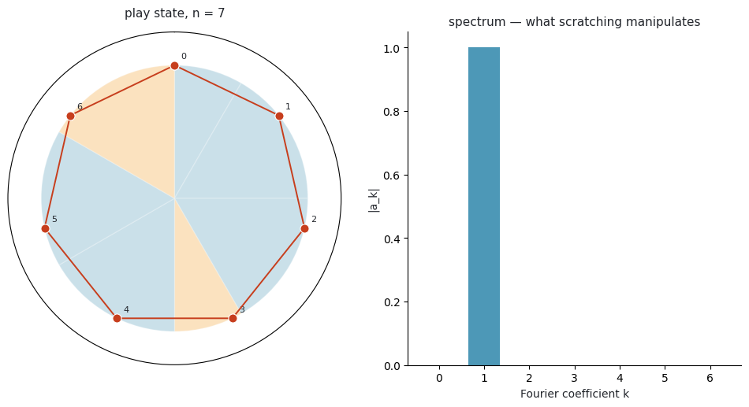
Higher partials with an index coprime to n generate complete generic interval cycles — every tone still struck once, but in a different order.
for k in range(1, 8):
degrees = [e.degree for e in M.to_events(M.partial(7, k), proper)]
coprime = math.gcd(k, 7) == 1
print(f"partial {k} coprime={str(coprime):5s} degrees {degrees} "
f"distinct {len(set(degrees))}")
partial 1 coprime=True degrees [0, 1, 2, 3, 4, 5, 6] distinct 7
partial 2 coprime=True degrees [0, 2, 4, 6, 1, 3, 5] distinct 7
partial 3 coprime=True degrees [0, 3, 6, 2, 5, 1, 4] distinct 7
partial 4 coprime=True degrees [0, 4, 1, 5, 2, 6, 3] distinct 7
partial 5 coprime=True degrees [0, 5, 3, 1, 6, 4, 2] distinct 7
partial 6 coprime=True degrees [0, 6, 5, 4, 3, 2, 1] distinct 7
partial 7 coprime=False degrees [0, 0, 0, 0, 0, 0, 0] distinct 1
# "Scratching": move one Fourier coefficient and the whole play state responds.
scratched = state.scratch(3, magnitude=0.6, phase=1.1)
fig, axes = M.plot_play_state(scratched, proper)
plt.show()
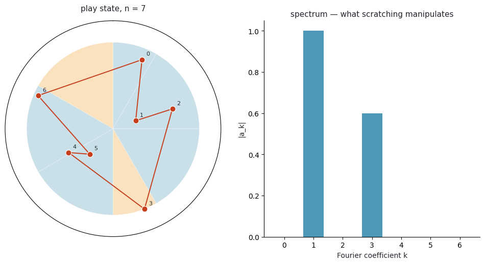
13. Dynamic Tonality: matching the timbre to the scale#
Milne et al. §6. Intervals inside a dynamically tuned well-formed scale can be far from any low integer ratio, so a plain harmonic timbre sounds out of tune against them. Dynamic Tonality retunes the timbre instead: each partial’s pitch becomes a linear combination of the period and generator pitch heights, so partials of different tones coincide exactly as the scale’s own intervals do.
mt = M.MOSScale.from_signature(5, 2, tuning=31)
pd.DataFrame([
{
"harmonic": p.harmonic,
"α (periods)": p.alpha,
"β (generators)": p.beta,
"just": round(p.just_ratio, 5),
"retuned": round(p.ratio, 5),
"error ¢": round(p.error_cents, 2),
}
for p in M.matched_partials(mt, n_partials=10)
])
| harmonic | α (periods) | β (generators) | just | retuned | error ¢ | |
|---|---|---|---|---|---|---|
| 0 | 1 | 0 | 0 | 1.0 | 1.00000 | 0.00 |
| 1 | 2 | 1 | 0 | 2.0 | 2.00000 | 0.00 |
| 2 | 3 | 1 | 1 | 3.0 | 2.99104 | -5.18 |
| 3 | 4 | 2 | 0 | 4.0 | 4.00000 | 0.00 |
| 4 | 5 | 0 | 4 | 5.0 | 5.00226 | 0.78 |
| 5 | 6 | 2 | 1 | 6.0 | 5.98207 | -5.18 |
| 6 | 7 | -3 | 10 | 7.0 | 6.99562 | -1.08 |
| 7 | 8 | 3 | 0 | 8.0 | 8.00000 | 0.00 |
| 8 | 9 | 2 | 2 | 9.0 | 8.94629 | -10.36 |
| 9 | 10 | 1 | 4 | 10.0 | 10.00452 | 0.78 |
Harmonic 3 maps to one period plus one generator, and harmonic 5 to four generators — which is what “meantone” means: four fifths, octave-reduced, stand in for a just major third.
The payoff is measurable. For a scale tuned well away from 12-EDO, matched partials give lower total sensory dissonance than harmonic ones:
rows = []
for label, scale in [
("5L2s @ 714 ¢", M.MOSScale.from_signature(5, 2, tuning=0.5952)),
("5L2s @ 31-EDO", mt),
("4L3s", M.MOSScale.from_signature(4, 3, tuning="central")),
("7L4s", M.MOSScale.from_signature(7, 4, tuning="central")),
]:
adv = M.dissonance_advantage(scale, n_partials=8)
rows.append({
"scale": label,
"harmonic partials": round(adv["harmonic"], 3),
"matched partials": round(adv["matched"], 3),
"reduction": round(adv["reduction"], 3),
"reduction %": round(adv["reduction_pct"], 1),
})
pd.DataFrame(rows)
| scale | harmonic partials | matched partials | reduction | reduction % | |
|---|---|---|---|---|---|
| 0 | 5L2s @ 714 ¢ | 21.332 | 19.924 | 1.408 | 6.6 |
| 1 | 5L2s @ 31-EDO | 22.451 | 21.704 | 0.747 | 3.3 |
| 2 | 4L3s | 24.831 | 24.851 | -0.020 | -0.1 |
| 3 | 7L4s | 70.877 | 70.900 | -0.023 | -0.0 |
14. Interactive exploration#
Two interactive surfaces, both needing pip install biotuner[interactive].
labyrinth_plotly gives every arc its own hover card — signature, valid range, landmark
EDOs, coherence, embedding — and exports to a standalone HTML file:
fig = M.labyrinth_plotly(18, peaks=bt.peaks_ratios, highlight=fit.scale, temperaments=True)
fig.write_html("labyrinth.html")
fig
mos_explorer is the instrument Milne et al. designed the labyrinth to be. Drag the
generator and the family recomputes, the wheel redraws, the summary updates and the fit
against your signal is re-scored live:
M.mos_explorer(bt)
fit_explorer steps through the ranked fits so a close second can be inspected rather
than taken on trust, and scratch_explorer puts a slider on every Fourier coefficient:
M.fit_explorer(bt.peaks_ratios)
M.scratch_explorer(proper)
Where to look next#
module |
contents |
|---|---|
|
Stern–Brocot, landmarks, Christoffel words — standard library only |
|
|
|
modes, brightness, the ℤ² height–width lattice |
|
Myhill’s property, propriety, evenness, JI error |
|
commas → rank-2 mappings → optimal generators |
|
biosignal → MOS: fitting and trajectories |
|
Fourier Scratching play states |
|
Dynamic Tonality partial matching |
|
the labyrinth and friends |
|
Plotly and ipywidgets explorers |